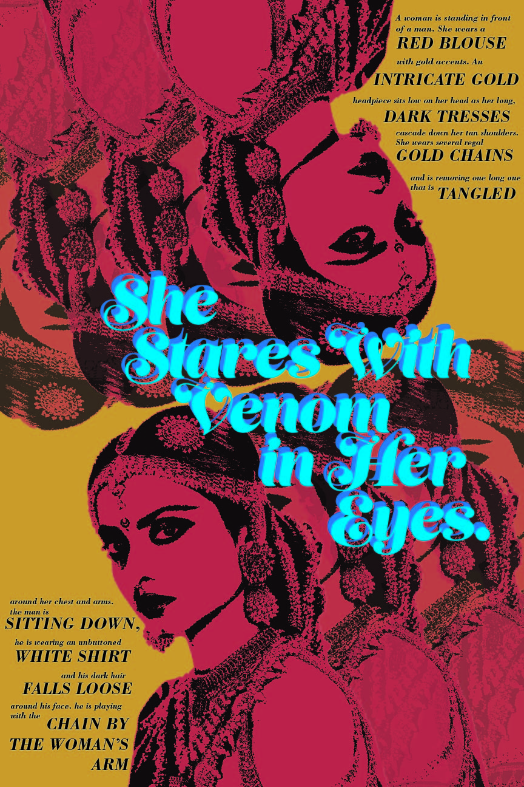

six word memoir poster: this poster was the result of a project brief to write a six word memoir and create a poster depicting that phrase using only text. it was inspired by my tendency to zone out during that particular studio.
the desi girl's guide to witchcraft: an eight-page foldable zine that shares traditional south asian home remedies. for this, my collaborator neha hosangadi and i drew from the parts of south asian culture that have become the foundation for modern-day "witchcraft", while adding our our fun spin on the topic. inspired by a promise and a practice by caroline lazard, we aimed to create a method of dispersing this zine in a way that was accessible to all. we put up posters with qr codes for a pdf that contained the print-and-fold version of our zine, as well as larger versions of the pages that are easier to read. the final product was printed in riso.
alt text poster: this poster was the result of a project brief to choose an image, write descriptive alt text for it, and then turn the alt text into a poster without using the original image. my original image was of the indian actress rekha, from the film utsav. for my final poster, i was inspired by bollywood film posters from the 70s.